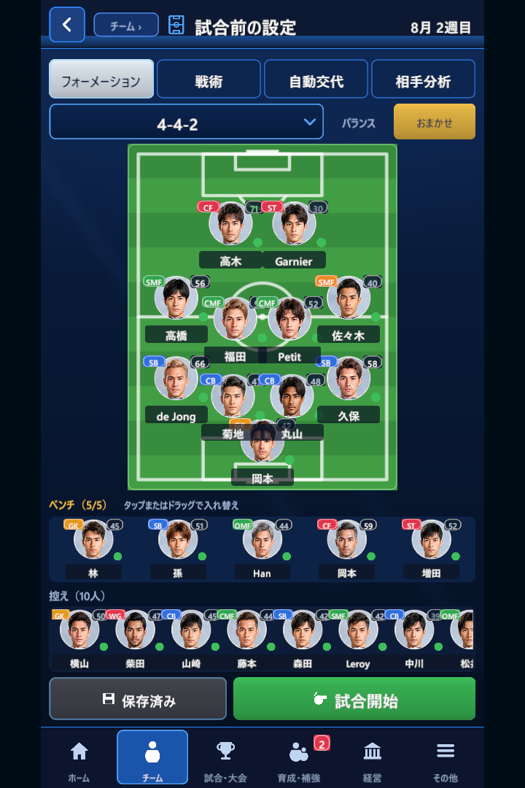

操作方法
画面の見方と、1週間の進め方を紹介します。
はじめに
- スマホ（Android）：縦向きで遊びます。操作はタップ・長押し・ドラッグです。
- PC（Windows）：横長のウィンドウで遊びます。操作はクリックです。ウィンドウを縦長にすると、スマホと同じ縦向きの画面になります。
- 画面左上の「＜」で1つ前の画面に戻ります。Android の戻るボタンや、PC の Esc キーでも戻れます。
- セーブデータは3つまで作れます。ゲームは自動で保存されます。
ホーム画面

- 上の帯：資金・人気・サポーターの数。
- クラブ名の下：今いるリーグと日付（1ターン＝1週間）。
- 右の大きな枠：今週やること。試合の週は「試合へ」、試合のない週は「次の週へ進む」でゲームが進みます。
- 左のメニュー：5つの分類から各画面を開きます（下の表）。赤い数字は、確認が必要なことの数です。
- リーグ順位・お知らせ：今の順位と、最近のできごと。
- いちばん下の帯：どの画面からでも、ホームと5つの分類に移れます。
| メニュー | 中にある画面 |
|---|---|
| チーム | 選手一覧・戦術とフォーメーション・練習・契約更新 |
| 試合・大会 | スケジュール・リーグ順位・大会（国内カップ・アジアの大会・世界クラブ大会）・友人チームと対戦 |
| 育成・補強 | ユース・移籍・スカウト・コーチ |
| クラブ経営 | 収支・月間レポート・スポンサー・施設強化・スタジアム・固定費と見込み |
| 記録・その他 | お知らせ・タイトルと目標・年間の振り返り・クラブの歩み・チームデータ交換・設定とセーブ |
1週間の進め方
- 練習を決める。「チーム」→「練習」で、チームの練習メニューと、休ませる選手（3人まで）を選びます。
- 試合の準備をする。「チーム」→「戦術」で、フォーメーション・スタメン・戦術・自動交代を決めます。「おまかせ」で自動でも決められます。
- 試合をする。ホームの「試合へ」から試合前の設定を確かめ、「試合開始」を押します。
- 週の結果を見る。試合の結果、練習で伸びた能力、お知らせが表示されます。次の週へ進みます。
練習で経験値がたまると能力が上がります。疲れがたまると、練習の効果も試合の動きも落ちます。疲れた選手は休ませましょう。
戦術とスタメン

- フォーメーション：上の欄から選びます（6種類）。
- 選手の入れ替え：ピッチ・ベンチ・控えの選手を、タップまたはドラッグで入れ替えます。
- 選手の能力を見る：選手を長押しすると、能力やスキルが見られます。
- 戦術：攻撃重視・バランス・守備重視・カウンターなどから選びます。
- 自動交代：疲労時・リード時・ビハインド時など、選手を交代させる条件を決めます。
- 相手分析：試合前の設定でだけ見られます。次の相手の特徴を確かめられます。
変えた設定は「保存」を押すと残ります。
試合

「試合開始」を押すと、試合のしかたを選べます。
- 試合開始：3Dで試合を見ます。
- 結果だけ：試合を見ずに、2Dのハイライトで結果を見ます。
3Dの試合中にできること：
- 2倍速・4倍速・スキップ：試合を早送りできます。
- ハーフタイム：作戦・フォーメーション・選手交代を指示できます。選手をドラッグして重ねると能力を比べられ、離すと交代します。
「設定」で、試合の表示を「3D（試合をする）」と「2D（ハイライト）」から選べます。いつでも切り替えられます。
補強と育成
移籍
移籍できるのは、夏（7月1週〜9月2週）と冬（2月1週〜3月1週）だけです。「育成・補強」→「移籍」で選手を探し、「獲得交渉」で移籍金・年俸・契約年数を決めてオファーします。
スカウト
他クラブの選手は、スカウトが見つけてくれます。探すポジションや地域を任務として指示できます。スカウトが調べた選手ほど、能力やスキルが正確に分かります。
コーチ
FW・MF・DF・GKのコーチを雇うと、担当ポジションの選手が速く成長します。契約の最後の年度には、契約を延長できます。
ユース
ユースの候補生を入団させます。「回想して入団」を選ぶと、ミニゲーム「ユース回想」で15〜18歳の育成を振り返り、能力やスキルを伸ばせます。
クラブ経営
- 収入：スポンサー料・入場料（ホームの試合）・リーグや大会の賞金。
- 支出：選手とスタッフの年俸、施設の費用など。
- スポンサー：契約は、シーズン準備（7月）の間だけ結べます。
- 施設：練習場やスタジアムなどを強化すると、育成や収入が良くなります。工事には時間がかかります。
資金が尽きると補強ができなくなります。赤字が続かないように気をつけましょう。
シーズン準備（7月）
リーグ戦は8月に開幕し、翌年6月に閉幕します。7月はシーズン準備で、次の手続きを順番に行います。
- 順位発表・年間表彰：前のシーズンの結果を振り返ります。
- 契約更新：契約が切れる選手を更新するか、退団させるか決めます。
- フリー移籍：どこのクラブにも入っていない選手と交渉できます。
- スポンサー：スポンサーと契約します。
- キャンプ：キャンプ地とテーマを選ぶと、選手の能力の上限が上がります（行わなくてもかまいません）。